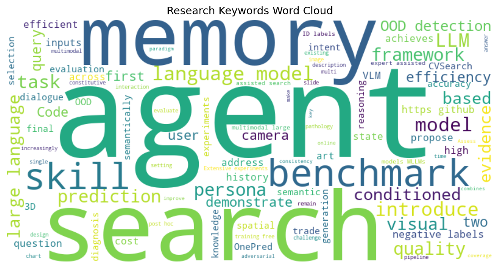

Liupeng Li, Haoqian Kang, Zhenyu Lu et al.
2026-05-22T14:07:44Z
High-resolution (HR) image perception presents a key bottleneck for multimodal large language models (MLLMs). While visual search offers a promising solution, existing methods struggle with the trade-off between coverage and efficiency. Visual expert-assisted search is efficient but prone to blind s...
Liupeng Li, Haoqian Kang, Zhenyu Lu et al.
2026-05-22T14:07:44Z
High-resolution (HR) image perception presents a key bottleneck for multimodal large language models (MLLMs). While visual search offers a promising solution, existing methods struggle with the trade-off between coverage and efficiency. Visual expert-assisted search is efficient but prone to blind s...
Liupeng Li, Haoqian Kang, Zhenyu Lu et al.
2026-05-22T14:07:44Z
High-resolution (HR) image perception presents a key bottleneck for multimodal large language models (MLLMs). While visual search offers a promising solution, existing methods struggle with the trade-off between coverage and efficiency. Visual expert-assisted search is efficient but prone to blind s...
Zhewen Tan, Yilun Yao, Huiyan Jin et al.
2026-05-22T15:03:13Z
Large language model agents increasingly rely on persistent memory to store past interactions, retrieve relevant demonstrations, and improve long-horizon task execution. However, this memory mechanism also creates a practical security vulnerability: an adversarial user may inject malicious records i...
Jiahao Ying, Boxian Ai, Wei Tang et al.
2026-05-22T14:09:41Z
Skills, i.e., structured workflow instructions distilled for large language models (LLMs), are becoming an increasingly important mechanism for improving agent performance on real-world downstream tasks. However, as the open-source skill ecosystem rapidly expands, it remains unclear how different mo...
Jiarui Guo, Haojia Wei, Yiming Zhang et al.
2026-05-22T15:40:52Z
Virtual photography asks an agent to enter a prepared 3D scene with no preselected camera pose or reference image, infer a suitable shot from scene information and a language intent, choose executable camera parameters, and render the final photograph. Recent progress in vision-language models makes...
Jiarui Guo, Haojia Wei, Yiming Zhang et al.
2026-05-22T15:40:52Z
Virtual photography asks an agent to enter a prepared 3D scene with no preselected camera pose or reference image, infer a suitable shot from scene information and a language intent, choose executable camera parameters, and render the final photograph. Recent progress in vision-language models makes...
Haoyuan Wang, Xiaohao Liu, Jiajie Su et al.
2026-05-22T15:46:10Z
Multimodal large language models (MLLMs) need efficient mechanisms to update knowledge without degrading existing capabilities. While intrinsic multimodal knowledge editing achieves strong reliability and locality, it often exhibits limited generality, failing to propagate edits across semantically ...
Jiazhen Pan, Weixiang Shen, Jun Li et al.
2026-05-22T13:41:10Z
Medical diagnosis is not a single prediction from a fully specified vignette. It is a sequential workup: clinicians decide what evidence to obtain, revise a differential diagnosis, and stop when the diagnosis is sufficiently supported. Most medical AI benchmarks instead reveal the relevant context u...
Chunze Yang, Qidong Liu, Wenjie Zhao et al.
2026-05-22T12:25:43Z
Whole-slide image visual question answering (WSI-VQA) frames pathology as an extreme-context search problem: to answer a free-form clinical query, a system must first navigate a gigapixel slide under a strict inspection budget to locate sparse, high-resolution evidence. Existing approaches largely f...
Jiangwang Chen, Bowen Zhang, Zixin Song et al.
2026-05-22T14:16:21Z
Although large language model (LLM) conversational systems process millions of multi-turn dialogues daily, they remain fundamentally reactive: they respond only after the user types a query. A key step toward proactive interaction is next-query prediction, which anticipates the user's subsequent que...
Jiangwang Chen, Bowen Zhang, Zixin Song et al.
2026-05-22T14:16:21Z
Although large language model (LLM) conversational systems process millions of multi-turn dialogues daily, they remain fundamentally reactive: they respond only after the user types a query. A key step toward proactive interaction is next-query prediction, which anticipates the user's subsequent que...
Fen Wang, Zekai Shao, Qiman Kang et al.
2026-05-22T14:49:48Z
Chart descriptions are essential for accessibility, cross-modal retrieval, and assisting readers in extracting insights from complex visualizations. As multimodal large language models (MLLMs) are increasingly adopted for automated chart description generation, a critical question arises: how faithf...
Bo Peng, Jie Lu, Guangquan Zhang et al.
2026-05-22T15:57:56Z
Aiming at identifying unexpected inputs from unknown classes, out-of-distribution (OOD) detection has emerged as a pivotal approach to enhancing the reliability of machine learning models. This paper focuses on the burgeoning paradigm of post-hoc OOD detection with pre-trained vision-language models...
Bo Peng, Jie Lu, Guangquan Zhang et al.
2026-05-22T15:57:56Z
Aiming at identifying unexpected inputs from unknown classes, out-of-distribution (OOD) detection has emerged as a pivotal approach to enhancing the reliability of machine learning models. This paper focuses on the burgeoning paradigm of post-hoc OOD detection with pre-trained vision-language models...
Marius Tacke, Matthias Busch, Kian Abdolazizi et al.
2026-05-22T15:27:09Z
Developing constitutive models that capture how materials deform under load traditionally requires years of specialized expertise in continuum mechanics, machine learning, and scientific programming. Large language models (LLMs) have recently been shown to lower this barrier by generating constituti...
Yoosung Hong
2026-05-22T14:04:43Z
On a 300-persona life-simulation benchmark, pcsp achieves compositional zero-shot persona identification up to 17x above chance, Spearman rho approx 0.73 semantic-behavioral alignment, and 22x faster inference than an LLM-as-policy baseline. Life simulation games require hundreds to thousands of non...
